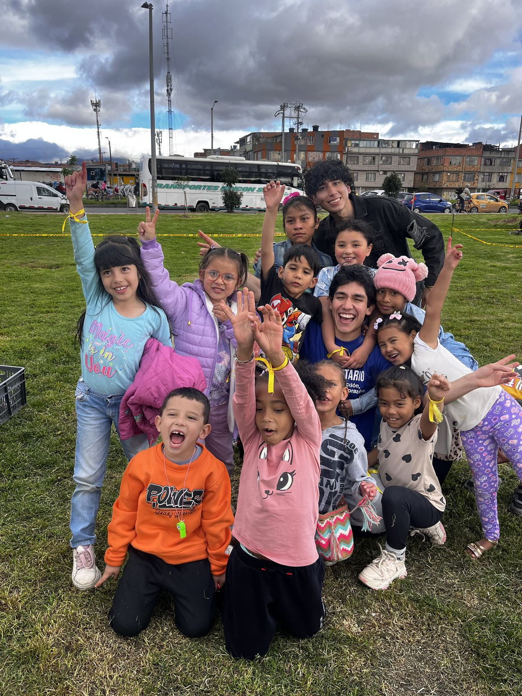

Efectos de nuestros programas
Promovemos la salud mental de niños, niñas y adolescentes en situación de vulnerabilidad económica. Aquí te contamos lo que cambia con nuestros programas y lo que logramos en 2023.

Efecto de nuestros programas
Lo que cambia con nuestros programas
Cada componente de nuestro trabajo busca un cambio en la vida de los niños, los jóvenes y sus familias.
-
Formación y educación
Un propósito
Niños y jóvenes con un propósito claro y un proyecto de vida, que ven un camino hacia adelante y sienten esperanza.
-
Atención psicosocial
Alguien que los escuche
Niños y jóvenes con redes de apoyo más fuertes, que se convierten en factores protectores de su salud mental.
-
Seguridad alimentaria y humanitaria
Comida en la mesa
Familias con seguridad alimentaria, que han reducido las tensiones familiares y el estrés que causa la falta de alimento.
Resultados 2023 cifras por confirmar
Los doce resultados de 2023
Estas son las doce cifras que publicamos para el año 2023.
- Más de 150 familias con seguridad alimentaria 2023
- Más de 15 niños recibieron atención psicosocial 2023
- 10 jóvenes patrocinados proyecto de vida 2023
- Más de 190 niños en actividades recreativas y de bienestar 2023
- Más de 74 ayudas humanitarias entregadas 2023
- Más de 68 niños y jóvenes capacitados en habilidades blandas 2023
- Más de 56 personas atendidas en brigadas 2023
- Más de 165 niños formados 2023
- Más de 215 entregas de herramientas 2023
- Más de 6 papás capacitados 2023
- Más de 9 niños con condiciones médicas especiales 2023
- Más de 27 niños en acompañamiento escolar 2023
Cómo lo hemos logrado
Estos resultados son posibles gracias a personas, empresas y aliados que apoyan nuestro trabajo de muchas formas.
- Inversores sociales
- Donantes con débito mensual, desde $1.500 al día ($45.000 al mes). monto por confirmar
- Charlas
- Charlas pagas en empresas e instituciones para promover la salud mental.
- Patrocinio empresarial
- Empresas que donan recursos en especie o hacen un aporte mensual.
- Aliados
- Banco de Alimentos, Mundo Aventura, Maloka y Jaime Duque. aliados vigentes por confirmar
- Productos con causa
- Elaboramos prendas deportivas que aportan a la sostenibilidad de la fundación.
- Productos socialmente responsables
- Empresas que destinan a la fundación un porcentaje de sus productos o servicios.
- Embajadores
- Personas que dan a conocer la causa en sus redes sociales.
- Eventos
- Eventos de recaudación de fondos.
- Voluntariado
- Voluntariado personal y corporativo.
También en Nuestro trabajo
-
Nuestros programas
Los seis programas con los que acompañamos a los niños y a sus familias.
Ver los programas -
Nuestro aporte a los ODS
Los siete Objetivos de Desarrollo Sostenible a los que aporta nuestro trabajo.
Ver los ODS a los que aportamos -
Nuestro aporte a la agenda de desarrollo nacional
Cómo se relaciona nuestro trabajo con la agenda de desarrollo nacional. contenido pendiente
Ver la página sobre la agenda de desarrollo nacional -
Boletines de gestión
El boletín «Un lugar en acción» de 2023 y el informe de gestión social de 2022.
Ver los boletines e informes -
Certificado de trayectoria
El certificado de trayectoria de 2024 y el RUT de la fundación.
Ver los documentos del certificado y el RUT -
Educarte, formación en línea
La plataforma de formación en línea de la fundación.
Ir a Educarte.info (se abre en una pestaña nueva)
Tu apoyo hace posible este trabajo
Con $45.000 al mes apadrinas a un niño y apoyas su formación, su alimentación y su acompañamiento. monto por confirmar
Pendientes de confirmación (vista previa)
Cada elemento marcado por confirmar en esta página depende de una suposición de trabajo o de información que la fundación aún no ha confirmado. Nada se publica hasta que la fundación lo confirme.
- Resultados 2023: las doce cifras y sus etiquetas, tal como aparecen en la página actual (editada por última vez el 27 de septiembre de 2025), y si existen cifras de 2024 o 2025. La presentación 2024 llama «jóvenes patrocinados en educación superior» a la cifra de 10 jóvenes.
- Inversores sociales y apadrinamiento: $1.500 al día ($45.000 al mes) y lo que cubre.
- Aliados: que Banco de Alimentos, Mundo Aventura, Maloka y Jaime Duque sean aliados vigentes y autorizados; Jaime Duque no está entre los nueve logos de la página de inicio.
- Consentimiento de imagen: la foto de la introducción (niños en un parque, IMG_3350) no tiene consentimiento registrado.
- Agenda de desarrollo nacional: la página enlazada tiene contenido pendiente.
- Pie de página: NIT y dirección registrada; que los números de WhatsApp y los correos sean los públicos.